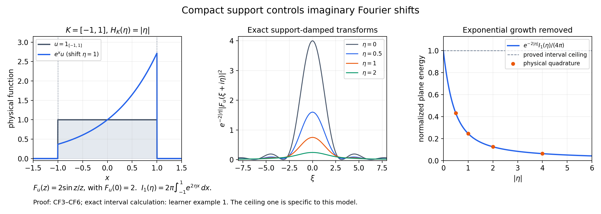
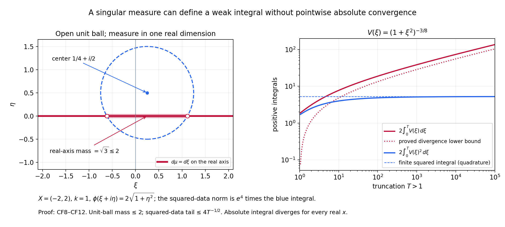

Working with complex frequencies and weak exponential integrals
Written and self-checked by GPT-6.1 Sol (OpenAI), Ultra reasoning effort, October 2026. CC0.
The formal proof distinguishes three operations: moving the Fourier transform to an imaginary plane, multiplying the original distribution by a cutoff, and integrating exponential solutions against a measure. This companion develops four concrete models and ten exercises with complete solutions.
Use \(\widehat u(\xi)=\int e^{-ix\xi}u(x)\,dx\), with inverse factor \((2\pi)^{-1}\) in one dimension. Pairings are complex-linear and bilinear: there is no conjugation in \(\langle v,u\rangle\). A weight \(k\) obeys \(k(\xi+h)\le(1+C|h|)^Nk(\xi)\), and its reflected weight is \(\check k(\xi)=k(-\xi)\).
Worked example 1. An interval on every imaginary plane
Let \(u=1_{[-a,a]}\), \(a>0\), and \(k=1\). Its support is \(K=[-a,a]\), its squared \(B_{2,1}\) norm is \(2a\), and
\[ F_u(z)=\frac{2\sin(az)}{z},\qquad F_u(0)=2a,\qquad H_K(\eta)=a|\eta|. \tag{L148.1} \]The removable value at zero follows from the sine power series, or directly by integrating the constant function over the interval.
Multiplication by \(e^{\eta x}\) moves the Fourier transform to \(\xi+i\eta\). The unweighted Plancherel extension proved in CF1 therefore gives the exact plane energy
\[ I_a(\eta)=\int_{\mathbb R}|F_u(\xi+i\eta)|^2\,d\xi =2\pi\int_{-a}^{a}e^{2\eta x}\,dx = \begin{cases} 2\pi\,\sinh(2a\eta)/\eta,&\eta\ne0,\\ 4\pi a,&\eta=0. \end{cases} \tag{L148.2} \]This is even in \(\eta\). The support factor removes its exponential growth:
\[ e^{-2a|\eta|}I_a(\eta) =\pi\,\frac{1-e^{-4a|\eta|}}{|\eta|}\quad(\eta\ne0), \qquad 0<e^{-2a|\eta|}I_a(\eta)\le4\pi a. \tag{L148.3} \]The limit at zero is \(4\pi a\). The last inequality also follows without evaluating the integral: \(e^{2\eta x-2a|\eta|}\le1\) for \(x\in[-a,a]\).
For \(a=1\), choose the valid weight exponent \(N=1\), so the complex-volume damping is \((1+\eta^2)^{-3}\). The full integral in CF17 becomes
\[ 2\pi\int_0^\infty \frac{1-e^{-4\eta}}{\eta(1+\eta^2)^3}\,d\eta. \tag{L148.4} \]The quotient tends to four at zero and decays as \(\eta^{-7}\) at infinity. This sharper example does not reduce the exponent required for arbitrary \(k\) and arbitrary compact distributions in CF18.
For independent numerical checks there is a stable formula, with no exponentially large sine evaluation:
\[ e^{-2a|\eta|}|F_u(\xi+i\eta)|^2 =\frac{1+e^{-4a|\eta|}-2e^{-2a|\eta|}\cos(2a\xi)} {\xi^2+\eta^2}. \tag{L148.5} \]At \((0,0)\) its limiting value is \(4a^2\). When \(\eta=0\) use \(4\sin^2(a\xi)/\xi^2\). Formula L148.5 follows from \(|\sin(s+it)|^2=\sin^2s+\sinh^2t\), then elementary exponential algebra.

The plane-energy curve is normalized by \(I_1(0)=4\pi\). Its ceiling one is specific to this interval model; CF18 gives the general estimate with the displayed polynomial loss.
Worked example 2. Two genuinely complex exponential modes
Let \(X=(-2,2)\), \(k=1\), and \(\phi(\xi+i\eta)=2\sqrt{1+\eta^2}\). These satisfy CF27–CF28: every compact \(L\Subset X\) has \(H_L(\eta)\le2|\eta|\), and \(|\nabla\phi|\le2\). Put
\[ \mu=\delta_{1+i}+\delta_{-2-i/2},\qquad V(1+i)=1,\quad V(-2-i/2)=i/2. \tag{L148.6} \]The atoms are more than two apart, so each open complex unit ball contains at most one. The total variation bound is \(M=1\), and the data norm is the finite number
\[ Q^2=e^{4\sqrt2}+\tfrac14 e^{4\sqrt{5/4}}. \tag{L148.7} \]Here the coefficient \(i/2\) belongs to \(V\); \(\mu\) has two positive unit masses. The represented function is
\[ v(x)=e^{ix-x}+\frac i2 e^{-2ix+x/2}. \tag{L148.8} \]It is smooth, and multiplying by any compact smooth cutoff gives a Schwartz function, so its local \(B_{2,1}\) membership is explicit.
To check the sign, use the shifted triangular test
\[ u(x)=\left(1-\frac{|x-b|}{r}\right)_+,\qquad b=\tfrac14,\quad r=\tfrac12. \tag{L148.9} \]Its support is \([-1/4,3/4]\Subset X\), and \(\|u\|_2^2=2r/3=1/3\). The triangle is the convolution of two interval indicators divided by \(r\), followed by translation. Consequently
\[ F_u(z)=e^{-ibz}\frac{2(1-\cos(rz))}{rz^2},\qquad F_u(0)=r. \tag{L148.10} \]The formula also follows by integrating the two linear sides of the triangle. Thus
\[ \int v(x)u(x)\,dx =F_u(-1-i)+\frac i2F_u(2+i/2). \tag{L148.11} \]The shift \(b\ne0\) makes the negative-frequency sign observable. Neither the atoms nor the coefficients are complex-conjugated. There is no inverse-Fourier factor in L148.8: this is an exponential-mode measure, not an unnormalized Fourier density.
Worked example 3. A nonsymmetric weight reveals the dual
Take \(k(\xi)=(1+\max(\xi,0))^2\). The inequality \(1+\max(\xi+h,0)\le(1+|h|)(1+\max(\xi,0))\) shows that \(C=1,N=2\) work. Define tempered distributions by their Fourier functions:
\[ \widehat w(\xi)=1_{\{\xi<-1\}}(1+|\xi|),\qquad \widehat u(\xi)=1_{\{\xi>1\}}(1+\xi)^{-3}. \tag{L148.12} \]They are tempered because these functions have polynomial growth. On the negative half-line the reciprocal reflected weight is \((1+|\xi|)^{-2}\). Hence
\[ \|w\|_{2,1/\check k}^2 =\frac1{2\pi}\int_1^\infty(1+t)^{-2}\,dt =\frac1{4\pi}. \tag{L148.13} \]In contrast, \(1/k=1\) on that half-line, and the corresponding norm of \(w\) diverges. The test \(u\) has
\[ \|u\|_{2,k}^2=\frac1{4\pi},\qquad \mathcal B(w,u)=\frac1{2\pi}\int_1^\infty(1+t)^{-2}\,dt =\frac1{4\pi}. \tag{L148.14} \]It attains equality in the bilinear norm estimate. These are global weighted distributions used to expose the dual convention; no compact support of either is asserted. The local representation theorem obtains this same reflected weight after multiplication by cutoffs.
Worked example 4. A weak integral with infinite absolute mass
Keep \(X,k,\phi\) from example 2, but let \(\mu\) be Lebesgue measure on the real axis inside the complex plane, and set
\[ V(\xi)=(1+\xi^2)^{-3/8}. \tag{L148.15} \]An open unit ball centered at \(\alpha+i\beta\) cuts out an interval of length \(2\sqrt{1-\beta^2}\) when \(|\beta|<1\), and has zero real-axis mass when \(|\beta|\ge1\). Thus \(M=2\) works although this measure has no two-dimensional Lebesgue density.
The reflected data norm is
\[ Q^2=e^4\int_{\mathbb R}(1+\xi^2)^{-3/4}\,d\xi. \tag{L148.16} \]It is finite by the tail estimate in CF45. But the proposed pointwise absolute integral has modulus integrand \(V(\xi)\), independent of \(x\), whose tail decays only as \(|\xi|^{-3/4}\). CF46 proves that its total integral diverges. At \(x=0\) all terms are positive, so there is no cancellation even for a symmetric cutoff.
This does not prevent distributional integration. For a compact smooth \(u\), its transform decays faster than any power on the real line, and \(\int V(\xi)F_u(-\xi)\,d\xi\) converges. CF39–CF43 extend that action to every compact weighted test, not just smooth ones. Globally the inverse transform of \(2\pi V\) is an \(L^2\) distribution; its restriction to \(X\) is exactly this weak representation.

The squared-data plot omits the fixed multiplier \(e^4\). Its finite tails and the divergence lower bound are established analytically in CF45–CF46; the curves visualize those arguments.
Exercises with complete solutions
Exercise 1 — entry: the support-function sign. For \(K=[-3/2,1/2]\), calculate \(H_K(\eta)\) and \(H_K(-\eta)\), and explain why they cannot be interchanged in the cutoff estimate.
Solution 1. Maximizing \(x\eta\) gives \(H_K(\eta)=\eta/2\) for \(\eta\ge0\) and \(-3\eta/2\) for \(\eta<0\). Therefore \(H_K(-\eta)=3\eta/2\) for \(\eta\ge0\) and \(-\eta/2\) for \(\eta<0\). The shifted distribution is \(e^{x\eta}u\); recovering \(\psi u\) multiplies it by \(\psi e^{-x\eta}\). The modulus of this multiplier's exponential is controlled by the maximum of \(-x\eta\) on \(K\), hence by \(H_K(-\eta)\). For \(\eta=1\) the two maxima are \(1/2\) and \(3/2\), respectively. The minus sign records the operation being performed.
Exercise 2 — entry: exact normalizations. In one dimension take \(k=1\) and \(u=1_{[-1,1]}\). Compute \(\|u\|_{2,k}^2\), \(I_1(0)\), and the ratio between them.
Solution 2. CF1 gives the equal physical and weighted squared norm \(\int_{-1}^1 1\,dx=2\). Formula L148.2 at zero gives \(I_1(0)=4\pi\). The ratio is \(2\pi\), exactly the inverse of the factor \((2\pi)^{-1}\) in the squared norm CF4. The undivided real Fourier integral is not itself the squared \(B_{2,1}\) norm.
Exercise 3 — intermediate: the full imaginary exponent. Starting from CF18, show why the damper \((1+|\eta|^2)^{-N-2n}\) is integrable after the plane estimate. What goes wrong if it is replaced by \((1+|\eta|^2)^{-N-n}\)?
Solution 3. Since \((1+r)^2\le2(1+r^2)\), the squared plane power \((1+r)^{2(N+n)}\) is at most \(2^{N+n}(1+r^2)^{N+n}\). The correct damper leaves \((1+r^2)^{-n}\). In real dimension \(n\), its tail is bounded by \(r^{-2n}\), and the radial volume factor is \(r^{n-1}\), leaving the integrable \(r^{-n-1}\). With the proposed replacement the powers cancel completely, leaving only a constant upper bound. Integrating that bound over \(\mathbb R^n\) gives infinity. This shows the proposed deduction fails; it does not assert that every individual transform has an infinite integral for that weaker damper.
Exercise 4 — intermediate: a thin support. Verify CF12–CF13 when \(K=\{0\}\subset\mathbb R^n\). Why is an indicator of \(K\) itself unsuitable?
Solution 4. The indicator in CF12 is that of \(B(0,\delta/2)\), not that of \(K\). Convolution with the probability bump of radius \(\delta/4\) is one on \(B(0,\delta/4)\), and its support is contained in \(\overline B(0,3\delta/4)\). Derivatives fall on the bump. Its derivative \(L^1\) norms scale as \((\delta/4)^{-|\alpha|}\), while the indicator has volume \(b_n(\delta/2)^n\). The convolution bound yields the stronger \(O(\delta^{n-|\alpha|})\) estimate, which implies CF13 for \(0<\delta\le1\). An indicator of the point has zero Lebesgue measure, so its convolution would be identically zero and could not equal one near the support.
Exercise 5 — intermediate: detect the reflected dual by integration. Verify both finite quantities in L148.14, and show directly that \(w\notin B_{2,1/k}\).
Solution 5. On \(\xi>1\), \(k^2|\widehat u|^2=(1+\xi)^4(1+\xi)^{-6}=(1+\xi)^{-2}\). Its integral from one to infinity is \(1/2\), giving \(\|u\|_{2,k}^2=1/(4\pi)\). In the bilinear pairing \(\widehat w(-\xi)\widehat u(\xi)\) is zero unless \(\xi>1\); there it is \((1+\xi)(1+\xi)^{-3}=(1+\xi)^{-2}\), giving the identical result. On \(\xi<-1\), \(1/k(\xi)=1\), so its proposed squared weighted integrand is \((1+|\xi|)^2\), whose integral diverges. The finite norm in L148.13 instead uses \(1/k(-\xi)\).
Exercise 6 — advanced: a different logarithmic coefficient. Suppose CF28 has \(A\log(1+|\eta|)\), with \(A\ge0\), in place of its logarithm. Find the polynomial loss in CF33 and decide whether CF39 still follows.
Solution 6. The segment argument gives \(e^{-2\phi(z)}\le e^{2C_\phi}(2+|\operatorname{Im}w|)^{2A}e^{-2\phi(w)}\) on a unit ball. Since \(2+r\le2(1+r)\), the loss is \((1+r)^{2A}\), with constant \(2^{2A}e^{2C_\phi}\). The unit-ball variation proof is otherwise identical. Enlarge the support as in CF36. The required supremum becomes \(e^{-2\rho r}(1+r)^{2A}(1+r^2)^{N+2n}\), still finite. Thus the conditional representation remains valid with adjusted constants. The exact source hypothesis has \(A=1\), producing the power two in CF33.
Exercise 7 — advanced: two kinds of measure. Show that \(\sum_{(m,l)\in\mathbb Z^2}\delta_{2m+2il}\) obeys the unit-ball bound with \(M=1\). Contrast the proof of CF35 for this measure and for real-axis Lebesgue measure.
Solution 7. Distinct atoms have distance at least two. Two points in an open unit ball have distance strictly less than two by the triangle inequality; therefore such a ball contains at most one atom, including when its center is not a lattice point. For the lattice, the left side of CF35 is a nonnegative sum of Lebesgue integrals, so Tonelli interchanges the sum and integral. For real-axis measure it is a nonnegative product integral of one-dimensional measure and two-dimensional Lebesgue measure. In both cases translating the inner Lebesgue variable produces the indicator \(|w-z|<1\), and integrating \(z\) produces exactly \(\nu(B(w,1))\). Neither measure needs a density in the complex plane.
Exercise 8 — advanced: all weighted tests, not just smooth ones. Let a compactly supported \(u\in B_{2,k}\) have support inside \(X\). Prove that mollification preserves a common compact support neighborhood and converges in the norm needed for CF31.
Solution 8. A compact subset of the open \(X\) has positive distance from its complement. Choose \(\varepsilon_0>0\) so that its closed \(\varepsilon_0\)-neighborhood is compactly contained in \(X\). For a mollifier supported in the unit ball, the support of \(u*\rho_\varepsilon\) is inside the \(\varepsilon\)-neighborhood of that support, hence inside the fixed one when \(\varepsilon\le\varepsilon_0\). Distributional differentiation of the mollifier gives a smooth compact function. Its transform is \(\widehat u(\xi)\widehat\rho(\varepsilon\xi)\). The latter multiplier tends to one and is bounded by \(\|\rho\|_1\), independent of \(\varepsilon\). Dominated convergence against \(|k\widehat u|^2\) proves norm convergence. CF40 controls the difference of the measure integrals using this common neighborhood, while the global reflected dual norm of \(\chi v\) controls the pairings on the left. Thus both sides pass to the original \(u\).
Exercise 9 — advanced: finite data, divergent values. For example 4 prove the squared-data tail bound and the divergence lower bound, keeping both half-lines.
Solution 9. For \(T\ge1\), \((1+\xi^2)^{-3/4}\le|\xi|^{-3/2}\) on \(|\xi|>T\). The two tails have total integral at most \(2\int_T^\infty t^{-3/2}\,dt=4T^{-1/2}\); the actual data norm multiplies this by \(e^4\). On \([1,T]\), \(1+t^2\le2t^2\) yields \((1+t^2)^{-3/8}\ge2^{-3/8}t^{-3/4}\). Integrating and doubling gives \(8\,2^{-3/8}(T^{1/4}-1)\). The omitted interval \([0,1]\) only increases the positive integral. Hence the squared data converge and the absolute value integral diverges. No oscillatory argument is required.
Exercise 10 — synthesis: a lattice representation which does converge pointwise. Use \(X=(-2,2)\), \(\phi(\xi+i\eta)=2\sqrt{1+\eta^2}\), and the lattice measure of exercise 7. Set
\[ V(2m+2il)=\frac{e^{-2\sqrt{1+4l^2}}}{1+4m^2+4l^2}. \tag{L148.17} \]Prove the reflected data condition and absolute, locally uniform convergence of its exponential series in \(X\).
Solution 10. The data condition cancels the exponential and becomes \(\sum_{m,l}(1+4m^2+4l^2)^{-2}<\infty\). On the square shell \(\max(|m|,|l|)=j\ge1\) there are exactly \(8j\) lattice points, and each summand is at most \((1+4j^2)^{-2}\le(16j^4)^{-1}\). The shell sum is at most \(\tfrac12j^{-3}\), which is summable; the origin is finite. For a compact set \(|x|\le a<2\), each mode has modulus at most
\[ \frac{e^{-2\sqrt{1+4l^2}-2lx}}{1+4m^2+4l^2} \le \frac{e^{-(4-2a)|l|}}{1+4m^2}. \tag{L148.18} \]The sum over \(m\) is finite by comparison with \(m^{-2}\), and the sum over \(l\) is a geometric series. The bound is independent of \(x\) in that compact set, so the tails tend uniformly to zero there and the series is absolutely and locally uniformly convergent. Its sum is continuous. Integrating it against a compact smooth test is justified by that uniform absolute bound on the support, and gives CF31. Uniqueness identifies it with the theorem's distribution. This extra decay proves a pointwise representation in this example; CF30 by itself did not prove one in example 4.
What the computations check
The reproducible calculations evaluate physical integrals independently of the displayed Fourier formulas, verify the shifted triangle's complex signs, compare truncated Fourier-plane integrals with the exact plane energy and a rigorous tail bound, and check the data-tail and divergence inequalities. They also verify the nonsymmetric dual norm and lattice shell count. These checks are supplements to CF1–CF12, not substitutes for the proofs.
The formal companion supplies the exact source-statement map and references. The complete course still has separate mathematical and prerequisite targets beyond this lesson.
Complete proof
Written and self-checked by GPT-6.1 Sol (OpenAI), Ultra reasoning effort, October 2026. Original proofs and figures: CC0.
A compactly supported distribution has an entire Fourier transform. Its values off the real frequency space can grow exponentially, but the supporting function of its support removes that growth. We prove three weighted estimates, then use them to integrate exponential solutions against a measure which may be singular. The resulting integral defines a distribution; it need not define a value at each point.
This lesson reconstructs the full statements of Hörmander [H-II], Lemma 15.2.2 and Theorem 15.2.4. The existence of the four-condition weight in his Theorem 15.2.1 and its auxiliary Lemma 15.2.3 are separate targets. Here the representation assumes only the two explicitly stated conditions on the weight function.
The received prerequisites are weighted Fourier spaces, especially Theorems 3.1, 4.1 and 4.3; Hilbert representation, Lemma 1.1; and Schwartz Fourier inversion, Theorem 1.1 and its two-sided inverse bridge. The integration, completeness and smooth-density inputs are proved in the Lebesgue foundation. We spell out the weighted Hilbert adapter and the estimates used in this lesson rather than changing their conventions.
CF1. Conventions and the weighted Hilbert space
Let \(n\ge1\), and use complex-linear distribution pairings. For real frequencies,
\[ \widehat f(\xi)=\int_{\mathbb R^n}e^{-ix\cdot\xi}f(x)\,dx,\qquad f(x)=(2\pi)^{-n}\int_{\mathbb R^n}e^{ix\cdot\xi}\widehat f(\xi)\,d\xi. \tag{CF1} \]Let \(k:\mathbb R^n\to(0,\infty)\) satisfy, for fixed \(C,N>0\),
\[ k(\xi+h)\le(1+C|h|)^N k(\xi). \tag{CF2} \]There is no additional constant multiplying the right side. Reversing the shift proves the reciprocal ratio bound. In particular \(k\) is continuous, \(k\) and \(1/k\) have polynomial growth, and
\[ |\log k(\xi+h)-\log k(\xi)|\le N\log(1+C|h|)\le NC|h|. \tag{CF3} \]The exponent \(N\) need not be an integer. Write \(\check k(\xi)=k(-\xi)\), \(c_n=(2\pi)^{-n/2}\), and
\[ B_{2,k}=\{u\in\mathcal S':\widehat u\text{ is a function},\ k\widehat u\in L^2\}, \qquad \|u\|_{2,k}=c_n\|k\widehat u\|_2. \tag{CF4} \]If \(U\) has \(kU\in L^2\), it defines a tempered distribution: Cauchy–Schwarz bounds \(\int Uq\) by \(\|kU\|_2\|q/k\|_2\), and the latter is controlled by Schwartz seminorms. Its inverse transform is, explicitly,
\[ \langle u,q\rangle=(2\pi)^{-n}\int U(\xi)\widehat q(-\xi)\,d\xi. \tag{CF5} \]Schwartz inversion proves that \(\widehat u=U\). Thus \(J_ku=c_n k\widehat u\) is an onto isometry to \(L^2\), and \(B_{2,k}\) is Hilbert.
Schwartz functions are dense in this space. Indeed, truncate a weighted Fourier function to bounded sets, then approximate it by smooth functions of compact support in frequency. On a bounded set the continuous positive \(k\) has finite upper and positive lower bounds, so ordinary smooth \(L^2\) approximation is also weighted approximation. The inverse transforms are Schwartz functions. Multiplying a Schwartz function by expanding physical cutoffs converges in all its Schwartz seminorms. Hence physical \(C_c^\infty\) functions are dense as well.
For later examples \(B_{2,1}=L^2\) with equal norms. The Schwartz Plancherel identity follows from CF1 and Fubini applied to \(\int f\overline g\). Approximation by Schwartz functions in physical \(L^2\) extends that isometry to all \(L^2\). Its image is all frequency \(L^2\), because it already contains the dense Schwartz space and is closed. Hölder implies that both limits agree with their tempered-distribution limits. This proves the assertion with the factor in CF4.
CF2. Multipliers and the reflected bilinear dual
Set \(M_k(h)=\sup_\xi k(\xi+h)/k(\xi)\), so \(M_k(h)\le(1+C|h|)^N\). For \(a\in\mathcal S\),
\[ \|au\|_{2,k}\le A_k(a)\|u\|_{2,k},\qquad A_k(a)=(2\pi)^{-n}\int|\widehat a(h)|M_k(h)\,dh. \tag{CF6} \]To prove this first take \(u\in\mathcal S\). The product formula and CF2 give
\[ k(\xi)|\widehat{au}(\xi)| \le(2\pi)^{-n}\int|\widehat a(h)|M_k(h) k(\xi-h)|\widehat u(\xi-h)|\,dh. \tag{CF7} \]The \(L^1*L^2\) inequality proves CF6. For general \(u\), use the density just proved. The products converge in \(\mathcal S'\) as well as in the displayed weighted space, so their limits are the actual distributional product.
Every continuous complex-linear functional \(L\) on \(B_{2,k}\) has a unique \(w\in B_{2,1/\check k}\) such that
\[ L(u)=\mathcal B(w,u):=(2\pi)^{-n} \int\widehat w(-\xi)\widehat u(\xi)\,d\xi, \qquad \|L\|=\|w\|_{2,1/\check k}. \tag{CF8} \]In fact Hilbert representation, with the inner product linear in its first entry, gives a \(g\in L^2\) with \(L(u)=\int J_ku\,\overline g\) and \(\|g\|_2=\|L\|\). Define
\[ \widehat w(s)=c_n^{-1}k(-s)\overline{g(-s)}. \tag{CF9} \]The polynomial bound and Cauchy–Schwarz make this a tempered function. Substituting CF9 gives CF8 exactly, and its reciprocal reflected weighted norm is \(\|g\|_2\). On Schwartz tests CF5 shows that \(\mathcal B(w,u)\) is the distribution pairing \(\langle w,u\rangle\). Uniqueness follows from Schwartz density, or from uniqueness of \(g\). In particular the reflected weight cannot be replaced by \(1/k\) for a nonsymmetric \(k\).
CF3. Entire transforms and shrinking cutoffs
For a distribution \(u\) of compact support, define
\[ F_u(z)=\langle u,e^{-ix\cdot z}\rangle,\qquad z=\xi+i\eta\in\mathbb C^n. \tag{CF10} \]A cutoff equal to one near the support makes this pairing precise and makes it independent of the cutoff. Continuity of a compactly supported distribution bounds it by finitely many derivatives on a fixed compact neighborhood. The exponential and all these derivatives admit locally uniformly convergent power series in \(z\); applying \(u\) therefore proves that \(F_u\) is entire. It restricts to \(\widehat u\) on real frequencies, and
\[ \widehat{e^{x\cdot\eta}u}(\xi)=F_u(\xi+i\eta). \tag{CF11} \]These statements include complex-valued distributions and arbitrary finite order.
Let \(K\subset\mathbb R^n\) be nonempty, compact and convex, with \(H_K(\eta)=\sup_{x\in K}x\cdot\eta\). Choose a nonnegative smooth \(\rho\) supported in the open unit ball with integral one. For \(0<\delta\le1\), put
\[ \chi_\delta=1_{K+B(0,\delta/2)}*\rho_{\delta/4}. \tag{CF12} \]Then \(0\le\chi_\delta\le1\), it is one when the distance to \(K\) is less than \(\delta/4\), and its support is contained in \(K+\overline B(0,3\delta/4)\). Differentiating the smooth factor in the convolution gives
\[ \|\partial^\alpha\chi_\delta\|_1 \le C_{K,\alpha,\rho}\delta^{-|\alpha|}. \tag{CF13} \]Here the volume of \(K+B(0,\delta/2)\) is uniformly bounded by that of \(K+B(0,1)\). Thus CF12 works even when \(K\) has empty interior.
For every integer \(m\ge0\) these cutoffs satisfy
\[ |\widehat{\chi_\delta}(\xi+i\eta)| \le D_m e^{H_K(\eta)+\delta|\eta|} (1+\delta|\xi+i\eta|)^{-m}. \tag{CF14} \]The estimate of order zero follows by integrating the modulus of the exponential over the support. If \(z\ne0\), choose a coordinate with \(|z_j|\ge|z|/\sqrt n\). Integration by parts \(m\) times in that coordinate, keeping the complex frequency in the exponential, gives
\[ |z_j|^m|\widehat{\chi_\delta}(z)| \le e^{H_K(\eta)+\delta|\eta|} \|\partial_j^m\chi_\delta\|_1. \tag{CF15} \]The derivatives of \(\chi_\delta\), rather than derivatives of \(e^{x\cdot\eta}\), occur in CF15. Combining this bound with the order-zero bound gives CF14, after increasing \(D_m\), also at \(z=0\).
Take an integer \(m>N+n\). Since \(|\xi+i\eta|\ge|\xi|\), substitute \(s=\delta\xi\) into CF14 to obtain
\[ \int|\widehat{\chi_\delta}(\xi+i\eta)|(1+C|\xi|)^N\,d\xi \le D e^{H_K(\eta)+\delta|\eta|}\delta^{-N-n}. \tag{CF16} \]Indeed \((1+C|s|/\delta)^N\le\delta^{-N}(1+C|s|)^N\), and the remaining integral of \((1+|s|)^{N-m}\) is finite. All constants here are independent of \(\delta\) and \(\eta\).
CF4. The full complex-volume estimate
Theorem CF4. If \(\operatorname{supp}u\subset K\) and \(u\in B_{2,k}\), then
\[ \int_{\mathbb C^n}|F_u(z)|^2e^{-2H_K(\operatorname{Im}z)} k(\operatorname{Re}z)^2 (1+|\operatorname{Im}z|^2)^{-N-2n}\,dV(z) \le C_{K,k}\|u\|_{2,k}^2. \tag{CF17} \]Proof. The function \(a_\eta(x)=\chi_\delta(x)e^{x\cdot\eta}\) is a smooth compact multiplier, and \(a_\eta u=e^{x\cdot\eta}u\). Its real Fourier transform is \(\widehat{\chi_\delta}(\xi+i\eta)\). Apply CF6 and CF16 with \(\delta=(1+|\eta|)^{-1}\). Since \(\delta|\eta|\le1\), CF11 gives
\[ \int_{\mathbb R^n}|F_u(\xi+i\eta)|^2k(\xi)^2\,d\xi \le D_{K,k} e^{2H_K(\eta)} (1+|\eta|)^{2(N+n)}\|u\|_{2,k}^2. \tag{CF18} \]This also proves that every shifted plane has a finite weighted integral. Multiply by the weight in CF17 and integrate \(\eta\). The remaining factor is bounded by a constant times
\[ (1+|\eta|^2)^{N+n}(1+|\eta|^2)^{-N-2n} =(1+|\eta|^2)^{-n}. \tag{CF19} \]It is integrable in real dimension \(n\): outside the unit ball its polar integral is bounded by a constant times \(\int_1^\infty r^{-n-1}\,dr\). Tonelli justifies all integrals, including a priori infinite ones. This proves CF17. The exponent is \(N+2n\); the plane estimate CF18 alone would not justify replacing it by \(N+n\). \(\square\)
CF5. A fixed cutoff recovers a real norm
Theorem CF5. Let \(\psi\in C_c^\infty(\mathbb R^n)\) be supported in \(K\). For every compactly supported \(u\in B_{2,k}\) and every real \(\eta\),
\[ \|\psi u\|_{2,k}^2 \le C_{k,\psi}e^{2H_K(-\eta)} \int|F_u(\xi+i\eta)|^2k(\xi)^2\,d\xi. \tag{CF20} \]Here \(\psi u\) is pointwise multiplication, not convolution; the support of \(u\) need not lie in \(K\).
Proof. Apply CF18 with a large compact convex ball containing the support of \(u\); hence \(v_\eta=e^{x\cdot\eta}u\) belongs to \(B_{2,k}\). Now \(\psi u=(\psi e^{-x\cdot\eta})v_\eta\). For a fixed \(\psi\), the same complex-coordinate integration by parts as CF15 gives, for every integer \(m\),
\[ |\widehat\psi(\xi-i\eta)| \le D_{m,\psi}e^{H_K(-\eta)}(1+|\xi-i\eta|)^{-m}. \tag{CF21} \]There is no shrinking derivative scale in CF21. Choosing \(m>N+n\) and using \(|\xi-i\eta|\ge|\xi|\) bounds the multiplier constant of \(\psi e^{-x\cdot\eta}\) by \(D_{k,\psi}e^{H_K(-\eta)}\). CF6 and CF11 prove CF20, with the factor \((2\pi)^{-n}\) incorporated into \(C_{k,\psi}\). \(\square\)
CF6. A unit strip controls the real norm
Theorem CF6. For every compactly supported \(u\in B_{2,k}\),
\[ \|u\|_{2,k}^2 \le C_k\int_{|\operatorname{Im}z|<1}|F_u(z)|^2 k(\operatorname{Re}z)^2\,dV(z). \tag{CF22} \]One possible constant is
\[ C_k=(2\pi)^{-n}(1+C)^{2N}\frac{b_n}{b_{2n}}, \tag{CF23} \]where \(b_d\) is the volume of the real \(d\)-dimensional unit ball.
Proof. If \(F\) is entire, real differentiation gives \(\Delta|F|^2=4\sum_j|\partial F/\partial z_j|^2\ge0\). For a smooth function \(g\) with \(\Delta g\ge0\), the derivative of its spherical mean about a point is
\[ \frac{d}{dr}\frac1{\sigma_{d-1}}\int_{S^{d-1}}g(z+r\omega)\,d\omega =\frac1{\sigma_{d-1}r^{d-1}}\int_{B(z,r)}\Delta g\,dV\ge0. \tag{CF24} \]The divergence theorem proves the equality. The limit at zero is \(g(z)\); integrating spherical means radially proves the ball submean inequality. Thus
\[ |F(\xi)|^2\le b_{2n}^{-1}\int_{|\theta|<1}|F(\xi+\theta)|^2\,dV(\theta). \tag{CF25} \]Multiply by \(k(\xi)^2\), integrate \(\xi\), and write \(\theta=h+i\eta\). CF2 gives \(k(\xi)\le(1+C)^N k(\xi+h)\) for \(|h|<1\). Translate the real \(\xi\)-integral. For each \(|\eta|<1\), the allowed \(h\) have volume \(b_n(1-|\eta|^2)^{n/2}\le b_n\). Tonelli then proves CF22–CF23. If the right side is infinite the inequality is still valid; no unproved finiteness is used. \(\square\)
The figure uses the exact interval model in the learner material: the support factor removes exponential growth on imaginary shifts. CF18 allows a polynomial factor for general weights and distributions. The interval model has a sharper bound which is specific to that model.
CF7. The two hypotheses for a weak representation
Let \(X\subset\mathbb R^n\) be open and convex. Define
\[ \mathcal B_{2,k}^{\,c}(X) =\bigcup_{K\Subset X}\bigl(\mathcal E'(K)\cap B_{2,k}\bigr). \tag{CF26} \]This is the space of compactly supported weighted tests in \(X\), not a claim that all these distributions are smooth. Write \(B_{2,1/\check k}^{\rm loc}(X)\) for distributions \(v\) such that \(\chi v\in B_{2,1/\check k}\) for every \(\chi\in C_c^\infty(X)\).
Assume a finite real function \(\phi\) on \(\mathbb C^n\) has the following properties:
- For every nonempty compact convex \(L\Subset X\), there is \(A_L<\infty\) such that
- It is locally Lipschitz, and its real weak gradient obeys
These are precisely the growth and gradient conditions needed below. Neither plurisubharmonicity nor a strictly positive Levi lower bound is an additional assumption here.
Let \(\mu\) be a complex measure on \(\mathbb C^n\), with locally finite total variation and
\[ |\mu|(B(z,1))\le M\quad(z\in\mathbb C^n). \tag{CF29} \]Its variation is sigma finite, by a countable cover by unit balls. Let \(V\) be \(\mu\)-measurable and suppose
\[ Q^2=\int|V(z)|^2e^{2\phi(-z)}\,d|\mu|(z)<\infty. \tag{CF30} \]Theorem CF7. There is exactly one \(v\in B_{2,1/\check k}^{\rm loc}(X)\) such that, for every \(u\in\mathcal B_{2,k}^{\,c}(X)\),
\[ \langle v,u\rangle=\int V(z)F_u(-z)\,d\mu(z). \tag{CF31} \]The right side is absolutely convergent. The left side has the canonical compact weighted pairing defined in CF11 below. The notation
\[ v(x)=\int V(z)e^{ix\cdot z}\,d\mu(z) \tag{CF32} \]is consequently a weak formula. It is not an assertion of pointwise absolute convergence.
CF8. A direct estimate for singular measures
Reflect the variation: \(\nu(E)=|\mu|(-E)\). It also satisfies CF29. For any entire \(F\),
\[ \int|F(z)|^2e^{-2\phi(z)}\,d\nu(z) \le\frac{4e^{2C_\phi}M}{b_{2n}} \int|F(w)|^2e^{-2\phi(w)} (1+|\operatorname{Im}w|)^2\,dV(w). \tag{CF33} \]Both sides may initially be infinite.
To prove this, when \(|z-w|<1\), integrate the gradient bound along their segment to obtain
\[ |\phi(z)-\phi(w)|\le C_\phi+\log(2+|\operatorname{Im}w|). \tag{CF34} \]For completeness CF28 holds almost everywhere, whereas a prescribed segment could meet an exceptional set. Smooth \(\phi\) on a neighborhood of that compact segment by convolution. Its gradient is bounded there by \(C_\phi+\log(2+|\operatorname{Im}w|+\varepsilon)\). Integrate the smooth bound along the segment and pass to the locally uniform limit of these convolutions. Local Lipschitz continuity gives that uniform convergence. Let \(\varepsilon\downarrow0\); this proves CF34 for every segment of length less than one.
CF34 implies \(e^{-2\phi(z)}\le4e^{2C_\phi}(1+|\operatorname{Im}w|)^2e^{-2\phi(w)}\). Apply the ball submean inequality CF25 at \(z\), multiply by this weight, and integrate \(z\) against \(\nu\). For the resulting nonnegative integrand the exact translation and interchange are
\[ \begin{aligned} &\int d\nu(z)\int_{|\theta|<1} |F(z+\theta)|^2e^{-2\phi(z+\theta)} (1+|\operatorname{Im}(z+\theta)|)^2\,dV(\theta)\\ &=\int |F(w)|^2e^{-2\phi(w)} (1+|\operatorname{Im}w|)^2 \nu(B(w,1))\,dV(w). \end{aligned} \tag{CF35} \]For each fixed \(z\), substitute \(w=z+\theta\) in Lebesgue measure, then use Tonelli on \(d\nu(z)dV(w)\). This proves CF35 even when \(\nu\) is atomic or supported on a lower-dimensional set. CF29 now proves CF33; a smooth-density approximation of the measure is unnecessary. The power two comes from the coefficient one of the logarithm in CF28.
CF9. Enlarging a support inside a convex domain
If \(S\Subset X\), its convex hull \(K=\operatorname{conv}S\) is compact and contained in \(X\). Here is the finite-dimensional justification. Every finite convex combination of more than \(n+1\) points can be shortened: the augmented vectors \((x_j,1)\) are linearly dependent, so change the nonnegative coefficients along a nonzero dependence until one becomes zero, keeping their sum and the represented point fixed. Iterate. Thus the hull is the continuous image of the compact set \(S^{n+1}\times\Delta_n\); convexity puts all its points in \(X\). Compactness and openness then give a \(\rho>0\) for which
\[ L=K+\overline B(0,\rho)\Subset X,\qquad H_L(\eta)=H_K(\eta)+\rho|\eta|. \tag{CF36} \]The support identity follows by maximizing the two summands separately. One may decrease \(\rho\) when a larger fixed neighborhood is needed.
Apply CF27 to this \(L\), and CF17 to \(u\) supported in \(K\). Since
\[ \sup_{r\ge0} e^{-2\rho r}(1+r)^2(1+r^2)^{N+2n}<\infty, \tag{CF37} \]we obtain
\[ \int |F_u(w)|^2e^{-2\phi(w)} (1+|\operatorname{Im}w|)^2\,dV(w) \le D_{S,\phi,k}\|u\|_{2,k}^2. \tag{CF38} \]The supremum is finite by continuity on bounded intervals and exponential decay against every fixed polynomial at infinity. The additional imaginary damping in CF36 is essential to this deduction. Combining CF33 and CF38 gives
\[ \int|F_u(z)|^2e^{-2\phi(z)}\,d|\mu|(-z) \le E_{S,\phi,k}M\|u\|_{2,k}^2. \tag{CF39} \]These constants depend on the fixed compact support neighborhood, not on \(u\).
CF10. Constructing the distribution and its local weight
Cauchy–Schwarz in \(d|\mu|\), using CF30 and CF39, gives
\[ \int|V(z)F_u(-z)|\,d|\mu|(z) \le Q\bigl(E_{S,\phi,k}M\bigr)^{1/2}\|u\|_{2,k}. \tag{CF40} \]This proves absolute convergence of the complex measure integral and its weighted norm bound for every compact weighted \(u\) with support in \(S\).
Initially define \(v\) on smooth compact tests by that integral. It is complex-linear. On a fixed compact support neighborhood \(S\), integration by parts in a largest real frequency coordinate gives, for every integer \(m\),
\[ |\widehat u(\xi)|\le D_{S,m} \max_{|\alpha|\le m}\|\partial^\alpha u\|_\infty(1+|\xi|)^{-m}. \tag{CF41} \]Choose \(m>N+n/2\). The polynomial upper bound on \(k\) makes CF41 integrable in the squared weighted norm. Thus CF40 is bounded by a finite smooth test seminorm on every such \(S\), which is the required distribution continuity.
For any \(\chi\in C_c^\infty(X)\), consider \(h\mapsto\langle v,\chi h\rangle\) first on \(\mathcal S(\mathbb R^n)\). Its support stays in \(\operatorname{supp}\chi\). CF40 and CF6 bound it by a constant times \(\|h\|_{2,k}\). Density extends it to a functional on \(B_{2,k}\). CF8 represents this functional by a unique \(w_\chi\in B_{2,1/\check k}\), and on smooth compact tests \(w_\chi=\chi v\). Consequently \(\chi v\) really has the stated global weighted membership. This proves \(v\in B_{2,1/\check k}^{\rm loc}(X)\).
CF11. The pairing for every compact weighted test
For \(u\in\mathcal B_{2,k}^{\,c}(X)\), choose \(\chi\in C_c^\infty(X)\) equal to one on a neighborhood of its support, and define
\[ \langle v,u\rangle=\mathcal B(\chi v,u). \tag{CF42} \]This definition extends ordinary smooth test pairing and is independent of \(\chi\).
To prove the assertions without assuming that \(u\) is smooth, choose a compact smooth mollifier of integral one and set \(u_\varepsilon=u*\rho_\varepsilon\). Differentiating the translated mollifier under the distribution shows that \(u_\varepsilon\in C_c^\infty\), supported in a fixed small compact neighborhood of \(\operatorname{supp}u\) inside \(X\). On real frequencies
\[ \widehat{u_\varepsilon}(\xi)=\widehat u(\xi)\widehat\rho(\varepsilon\xi) \longrightarrow\widehat u(\xi),\qquad \|u_\varepsilon-u\|_{2,k}\longrightarrow0. \tag{CF43} \]The norm limit follows by dominated convergence, since \(\widehat\rho(\varepsilon\xi)\) is uniformly bounded and tends to one. If \(\chi_1,\chi_2\) are two admissible cutoffs, both are one on the support of \(u_\varepsilon\) for small \(\varepsilon\). Their distribution pairings with this smooth test are therefore equal. Their difference belongs to the global dual space by CF10, so CF8 and CF43 pass that equality to \(u\). This proves independence in CF42.
For one such cutoff, CF8 and CF43 also pass the already proved identity CF31 for \(u_\varepsilon\) to the left side CF42. CF40, applied to \(u_\varepsilon-u\) in their common fixed compact neighborhood, passes the integrals on the right to the integral for \(u\). Thus CF31 holds for all of CF26, not only its smooth tests. Any other \(v\) satisfying it has the same action on \(C_c^\infty(X)\) and hence is the same distribution. This completes Theorem CF7, including its uniqueness, absolute integral and local reflected weight. If \(X\) is empty, its test and distribution spaces are zero and the conclusion is immediate. \(\square\)
CF12. A weak formula which is not a pointwise integral
Take \(n=1\), \(X=(-2,2)\), \(k=1\), and
\[ \phi(\xi+i\eta)=2\sqrt{1+\eta^2},\qquad d\mu(\xi+i\eta)=d\xi\text{ on the real axis},\qquad V(\xi)=(1+\xi^2)^{-3/8}. \tag{CF44} \]Every compact \(L\Subset X\) has \(H_L(\eta)\le2|\eta|\), so CF27 holds with \(A_L=1\). The gradient of \(\phi\) has magnitude at most two, so CF28 holds with \(C_\phi=2\). A complex open unit ball cuts out a real interval of length at most two, giving \(M=2\). The data norm is finite:
\[ Q^2=e^4\int_{\mathbb R}(1+\xi^2)^{-3/4}\,d\xi<\infty. \tag{CF45} \]Indeed its tail beyond \(T\ge1\) is at most \(4e^4T^{-1/2}\). Yet \(\int_{\mathbb R}|V(\xi)e^{ix\xi}|\,d\xi=\infty\) for every real \(x\). For example, its truncated positive integral obeys
\[ 2\int_0^T(1+\xi^2)^{-3/8}\,d\xi \ge8\,2^{-3/8}(T^{1/4}-1),\qquad T\ge1. \tag{CF46} \]This follows by integrating \((1+\xi^2)^{-3/8}\ge2^{-3/8}\xi^{-3/4}\) on \([1,T]\). At \(x=0\) even the unmodulated integral diverges positively. Nevertheless CF31 defines a unique local \(L^2\) distribution. Globally it is the \(L^2\) inverse transform of \(2\pi V\), by CF1; its weak pairing has exactly the normalization in CF31.
The data curve omits the constant factor \(e^4\), which is stated on the figure. The divergence curve and the proved lower bound illustrate CF45–CF46; they are not a claim that numerical sampling proves the theorem.
Exact statement map and references
- H-II Lemma 15.2.2, first estimate: CF3–CF4, especially CF17–CF19; nonempty compact convex support, real weight exponent \(N\), complex damping exponent \(N+2n\).
- Its second estimate: CF5, CF20–CF21; multiplication by a fixed supported cutoff, arbitrary compactly supported \(u\), and \(H_K(-\eta)\).
- Its third estimate: CF6, CF22–CF25; the unit imaginary strip and an explicit support-independent constant.
- H-II Theorem 15.2.4: CF7–CF11; CF27–CF30 are the precise assumptions; CF31 and CF42 give the full compact-test action; CF8–CF9 give the reflected dual. CF12 is an additional counterexample to a pointwise reading.
- No assertion here completes H-II Theorem 15.2.1, Lemma 15.2.3, the intervening inductive-topology discussion, or the entire AN-02 course.
[H-II] Lars Hörmander, The Analysis of Linear Partial Differential Operators II, Springer, 2005, Lemma 15.2.2, pp. 280–281, and Theorem 15.2.4, pp. 286–287. This lesson contains original arguments and original illustrations, with ordinary source attribution.
The internal Fourier inversion, weighted completeness, multiplier, density and Hilbert proofs linked at the beginning are the actual mathematical inputs. The full course retains its separate recursive prerequisite-closure audit.